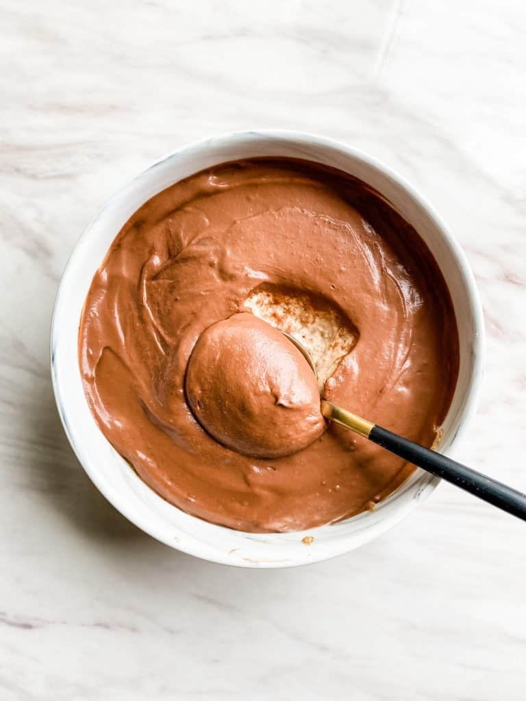

Blended Oats

Description
This oatmeal recipe changes up regular oatmeal into something creamy and delicious.
Try this oatmeal recipe to add a change to an otherwise "boring" oatmeal.
Ingredients
- 3/4 cup of oatmeal
- 3/4 cup of milk
- 1/2 a banana
- 1 tbsp of chia seeds
- 1 tbsp of cocoa powder
- 1 tbsp of maple syrup
- Dash of vanilla extract
- Dash of salt
- 1 serving of protein powder
- 2 tbsp of PBfit
Steps
- Add all of the items into a blender
- Blend until it is a creamy consistency, somewhere along 30-45 seconds. Depending on the strength of the blender, you might not need this much time unless you want to get a really creamy consistency.
- Serve into a few containers and you have breakfast for a few days.